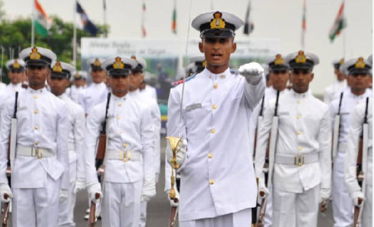

Delhi Police Head Constable भर्ती 2025
सैलरी, योग्यता और तैयारी की पूरी जानकारी
Navy Agniveer 2025: SSR/MR Recruitment, Eligibility, Salary, Selection Process, और Apply कैसे करें – पूरी जानकारी

| Post Name | Eligibility | Description |
|---|---|---|
| SSR (Senior Secondary Recruit) | 12वीं (Maths, Physics, 1 optional subject) | Navy technical और onboard काम |
| MR (Matric Recruit) | 10वीं पास | Cook, Steward, और Hygienist जैसे roles |
| Event | Date |
|---|---|
| Notification Release | July 2025 |
| Online Apply Start | 5 July 2025 (Expected) |
| Last Date to Apply | 20 July 2025 |
| Admit Card Download | August 2025 |
| Exam/Physical Test | September 2025 |
| Final Merit List | October 2025 |
| Criteria | SSR | MR |
|---|---|---|
| Qualification | 12वीं (Science) | 10वीं पास |
| Age Limit | 01 Nov 2004 से 30 April 2008 | |
| Gender | Male & Female दोनों | |
| Marital Status | Unmarried | |
| Nationality | Indian | |
💡 MR में written exam जरूरी नहीं है (2025 rule के अनुसार shortlisting से ही selection होगा – merit based)
| Test | Male | Female |
|---|---|---|
| Running | 1.6 KM in 6:30 minutes | 1.6 KM in 8 minutes |
| Squats (Uthak-Baithak) | 20 | 15 |
| Push-ups | 12 | N/A |
| Bent Knee Sit-ups | N/A | 10 |
| Year | Monthly Salary | Seva Nidhi Contribution | In-hand Salary |
|---|---|---|---|
| 1st | ₹30,000 | ₹9,000 | ₹21,000 |
| 2nd | ₹33,000 | ₹9,900 | ₹23,100 |
| 3rd | ₹36,500 | ₹10,950 | ₹25,550 |
| 4th | ₹40,000 | ₹12,000 | ₹28,000 |
🪙 4 साल बाद मिलेगा – ₹11.71 Lakh का Seva Nidhi Fund (Tax Free)
🎖️ Best performers को regular Navy में service का मौका भी मिल सकता है।
अगर आप चाहते हैं:
तो Indian Navy Agniveer 2025 आपके लिए बिल्कुल सही है।
👉 10वीं और 12वीं पास युवा इस मौके को बिल्कुल ना चूकें।
💬 आपको क्या चाहिए?
नीचे comment करके बताएं:
क्या आपको form भरने में मदद चाहिए?
या full preparation guide चाहिए SSR/MR के लिए?